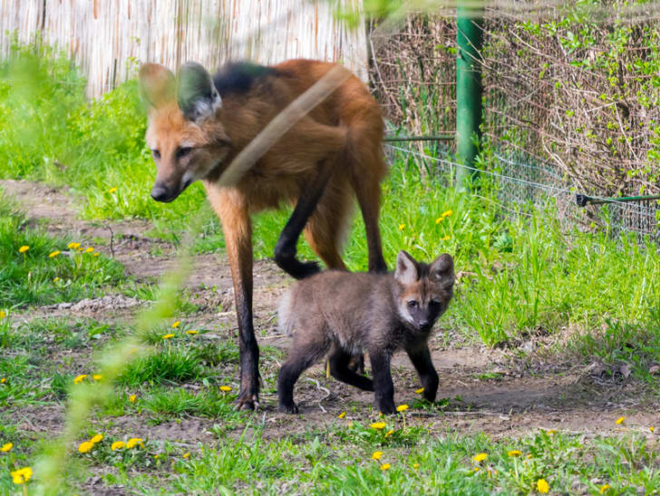
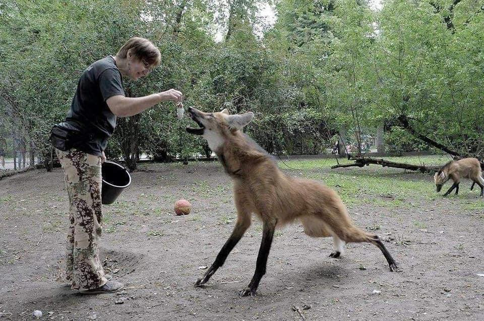

Lobo Crin
En donde vive
El aguará guazú o lobo de crin (Chrysocyon brachyurus), (del guaraní aguara guasu, 'zorro grande'), es un cánido autóctono de las regiones de espesuras y pastizales del Chaco de la Argentina y Paraguay, la llanura beniana, las pampas del Heath en Perú, así como en la cuenca de los ríos Paraguay y Paraná, en Sudamérica. Es inofensivo para el humano y el ganado; sin embargo, la ocupación de su hábitat y la caza lo han reducido a zonas aisladas. Se encuentra registrado en el Apéndice II del listado de especies protegidas de la CITES (Convención sobre el Comercio Internacional de Especies Amenazadas de Fauna y Flora Silvestres). Son excelentes caminadores, recorriendo los mismos senderos de ida y de vuelta. No necesita correr dado las pequeñas presas que persigue, razón además de su pequeño volumen pectoral. Los individuos se comunican entre sí a través de largas distancias con un aullido ronco, de tono bajo y de alto alcance.
Hábitos y alimentación
Se mantiene por lo general oculto durante el día; caza preferentemente en horario crepuscular, aunque está también activo de noche. Es omnívoro, come frutos y raóces tiernes, roedores pequeños, lagartos, ranas y aves pequeñas, también huevos de aves y reptiles.
El aguará guazú no forma manadas en ningún momento del año. Alrededor del año de edad madura sexualmente; un año más tarde forma una pareja estable; no caza ni duerme en común, pero ocasionalmente ocupan la misma madrigera. A comienzos de otoño la hembra inicia el estro; su receptividad dura solo cinco días en promedio. Desde el apareamiento hasta la madurez de las crías, la pareja se mantendrá junta. Ambos padres cuidan de los cachorros, que nacen tras dos meses de gestación. Una camada habitual tiene dos o tres ejemplares, aunque en cautiverio se han registrado hasta seis nacimientos. Las crías pesan unos 400 g, y nacen ciegos e indefensos como otros cánidos; al nacer no presentan pelaje, que comienza a crecer a los pocos días. Hasta los tres meses de edad la coloración es gris ceniza muy oscuro, que los ayuda a disimularse entre la vegetación. Los padres los alimentan y cuidan hasta cerca del año de edad; luego abandonan el territorio y se desplazan por la zona hasta encontrar un área desocupada y pareja.
Es excesivamente tímido para incursionar en estancias o poblados. Sin embargo, ha padecido extensamente la caza, motivada entre otras razones por la superstición que lo asimila al lobizón u hombre lobo. La transmisión de enfermedades exóticas lo ha mermado también considerablemente. Hoy, en Argentina, está protegido en todo su hábitat; existen ejemplares al este del Chaco, en Formosa, en Misiones en Corrientes, Santiago del Estero, extremo noreste de Córdoba y en el norte de Santa Fe, así como en Brasil y Bolivia y en el Chaco paraguayo.